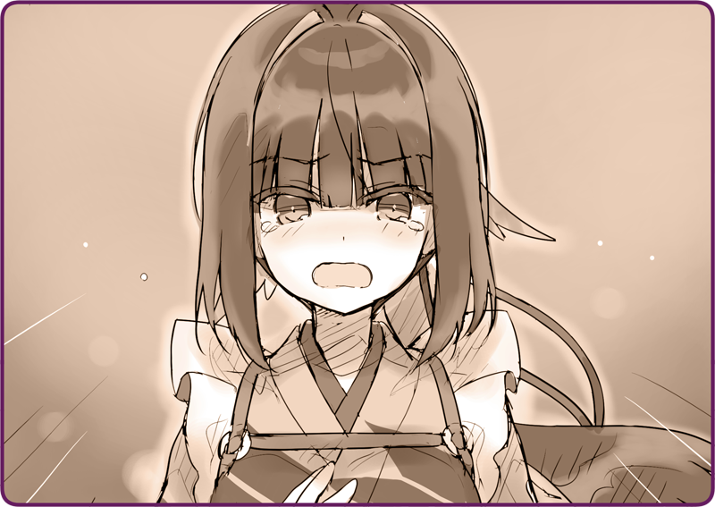

Nửa đêm, đối mặt với chiếc lò sưởi trong dinh thự, tôi đang uống sữa lắc bơ đậu phộng và để cơ thể nhân tạo của mình nghỉ ngơi.
Hơi nước bốc ra từ chiếc ống khói sau lưng tôi dần ngả màu đen.
Khi ấy quả thật quá nguy hiểm.
Nếu không cắt đuôi được chúng, chẳng chóng thì chầy tôi cũng sẽ bị bắt. Dù có hơi phó mặc cho số phận, nhưng thật may là kế sách của tôi đã phát huy tác dụng.
Tôi đã đẩy đám
Hình nhân Cơ khí xuống lòng hồ—— Hình nhân không thể nổi trên mặt nước. Nói không ngoa, nước là kẻ thù lớn nhất của chúng.
Tôi và Rosa bằng cách nào đó đã đến được bờ hồ bên kia mà không bị vướng vào những chỗ nứt trên mặt hồ.
Cả hai cứ lội bộ trong rừng như vậy, để rồi đến khi về được thị trấn thì Mặt Trời cũng đã xuống núi mất rồi.
Trông Rosa có vẻ đã thấm mệt, vì khi vừa về đến nhà em đã ngồi bệt hẳn xuống mà.
Dù rất lo cho thể trạng của cô bé, nhưng vì phải báo cáo lại cho chủ nhân, nên tôi đành để cô bé cho gia đình chăm sóc mà rời đi.
Chủ nhân cùng nhóm Otome-san lập tức hành động.
Họ lập một đội điều tra và nhanh chóng tới hiện trường.
Từ đó đến giờ cũng khá lâu rồi. Khi tôi nghĩ bụng đã đến khắc giao ngày, thì chợt thấy một chiếc xe quân dụng đỗ trước cửa nhà.
Vẫn quấn chăn, tôi bước ra đón ngài.
Nagi: “Ừ, xin lỗi em nhé.”
Đúng như dự đoán, áo khoác của ngài bám đầy tuyết. Đầu mũi của ngài đỏ lừ, và những ngón tay của ngài lạnh như bị đóng băng rồi vậy.
Nagi: “Nhờ em nhé. Tôi giờ phải có cái gì âm ấm vào người…”
Quả thật trông ngài rất mệt mỏi, đến độ phải cuộn tròn trước lò sưởi và chà tay lên má như một chú mèo thế kia mà.
Tôi tất bật chuẩn bị thật nhiều trà ấm, ngài liền uống vào trông thật thỏa mãn.
Nagi: “Việc điều tra đang rất thuận lợi… tôi muốn nói thế lắm, nhưng vẫn chẳng có tiến triển mấy.”
Nagi: “Chúng vẫn còn ở dưới đáy hồ. Bọn tôi vẫn đang tìm kiếm, nhưng bảo trục vớt chúng lên thì chắc chưa được. Phải có một thợ lặn chuyên nghiệp xuống đó thì may ra.”
Hình nhân nông nghiệp nọ cũng bị chìm xuống theo, thật tình tôi vẫn chưa hết quặn lòng.
Nagi: “Còn về, Hình nhân mà em bắt gặp…”
Nagi: “Chúng tôi đã xoay xở thu hồi được. Giờ Otome-chan đang trông giữ cô bé rồi.”
Nagi: “......”
Nagi: “Đó không phải Anh Hoa đâu.”
Nagi: “Đó chỉ là Hình nhân thực nghiệm tôi để lại ở Hoàng Quốc thôi. Cô bé bị lỗi nên hiện không thể khởi động được. Những kẻ bất lương đã cuỗm cô bé đi như kiểu chiến lợi phẩm rồi vượt biên...... Chắc chúng định tháo dỡ em ấy ra rồi phân tích đây mà.”
Bằng ngữ điệu man mác cô quạnh, chủ nhân tiếp lời.
Nagi: “Cớ sao thiên hạ lại không để những cô gái đó được yên kia chứ.”
Bởi thế mà ngài mới chọn một nơi hẻo lánh thế này để nghỉ dưỡng, bởi thế mà ngài mới thường ra ngoài chẳng vì điều gì.
Nagi: “Tôi đã kỳ vọng sẽ tìm ra manh mối nào đó. Nhưng thật không ngờ em lại tìm thấy con bé trước đấy.”
Tôi nhớ đến cô bé đã kiệt sức đến độ ngủ thiếp đi trong vòng tay mình.
Nagi: “Vấn đề là…”
Tôi khẽ hít vào một hơi.
Nagi: “Cho đến sáng mai, thuyền vẫn chưa thể xuất bến được.”
Chẳng mất bao lâu để tôi hiểu ý nghĩa của những lời đó.
Nagi: “Việc có Hình nhân Trinh sát của Lobelia ở đây, nghĩa là phải có một Hình nhân Tự hành đang điều khiển chúng. Hẳn phải có cả một đội hộ tống nữa. Có lẽ là ở ngoài khơi… hoặc trong tàu ngầm, vì không thấy báo cáo nào nói có chiến hạm ở ngoài biển cả.”
Nagi: “Nếu chúng nhận ra bên này vẫn chưa chuẩn bị gì, thì nhiều khả năng lắm.”
Nagi: “Ta phải sơ tán dân đảo đi lánh nạn. Phải thu dọn cả nơi này nữa… khi nào xong chúng ta sẽ đi ngay.”
＊ ＊ ＊
Trong căn phòng lờ mờ sáng, tôi đang sắp xếp hành lý của mình.
Tuy nhiên, những thứ có thể mang theo chỉ nhét vừa một tay nải.
Chỉ riêng đồ nhận được từ chủ nhân đã đầy một khăn rồi.
Đặt trên bàn, là những thứ tôi không thể cho vào hành lý.
Đó là một hũ mứt tầm xuân. Là thứ cô bé ấy đã ăn và khen ngon… Người bạn đầu tiên là con người của tôi trên hòn đảo này.
Thật khó tin rằng tôi lại có duyên tao ngộ cùng một người như vậy.
Nagi: “Karasuba, đi thôi.”
Sau khi thu dọn toàn bộ hành trang vào một ba lô, chủ nhân tới chỗ tôi.
Tôi nắm chặt lấy hũ mứt.
Và cao giọng thật quyết tâm.
Nagi: “Em đang nói gì thế? Em vẫn chưa được sửa xong…”
Nagi: “....... Em không được chiến đấu.”
Chủ nhân chỉ nhìn xuống, lặng lẽ lắc đầu.

Tôi đặt tay lên ngực và tiến lại gần chủ nhân.
Nagi: “........ Bởi em đã một thân một mình bảo vệ đồn Kaza, mặc cho sở chỉ huy đã bị tiêu diệt từ sớm, và mệnh lệnh tác chiến đã bị thu hồi…”
Nagi: “Hình nhân bình thường không suy nghĩ như vậy đâu. Em khác với những Hình nhân khác.”
Nagi: “Không, không phải thế… tôi đã thấy… hy vọng trong em… vậy nên, tôi muốn sửa em… không phải do ai ra lệnh cả… chỉ là tôi muốn như vậy…”
Tôi hét lên, tựa như đang van xin, tựa như đang khẩn cầu.

 “Em đã sửa xong rồi! Em đã điều khiển Hình nhân Cơ khí… để chiến đấu được rồi. Em đã có thể xung trận! Bây giờ chúng ta cần thêm chiến lực, dù chỉ là một người…”
“Em đã sửa xong rồi! Em đã điều khiển Hình nhân Cơ khí… để chiến đấu được rồi. Em đã có thể xung trận! Bây giờ chúng ta cần thêm chiến lực, dù chỉ là một người…”